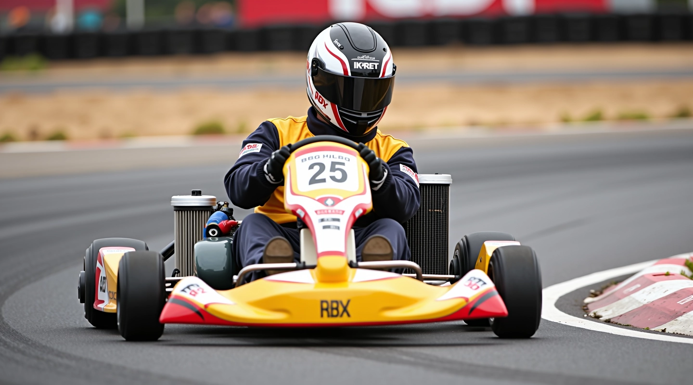
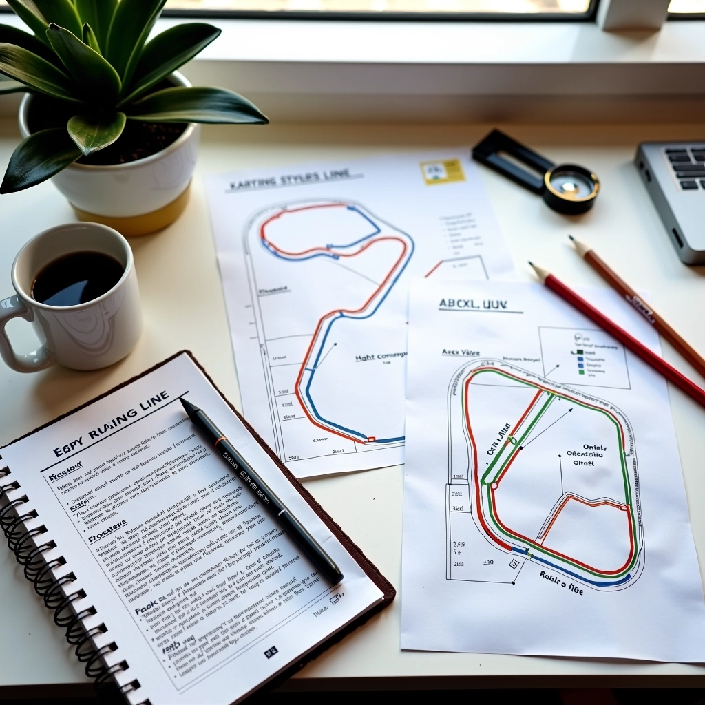
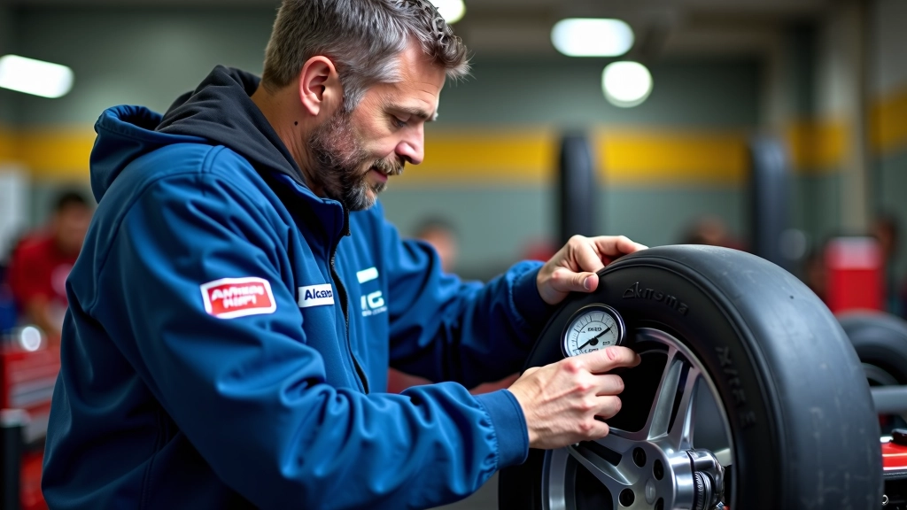
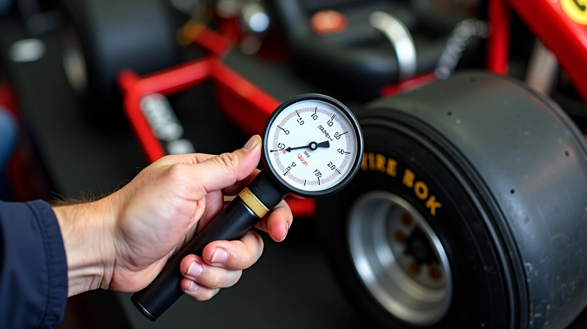
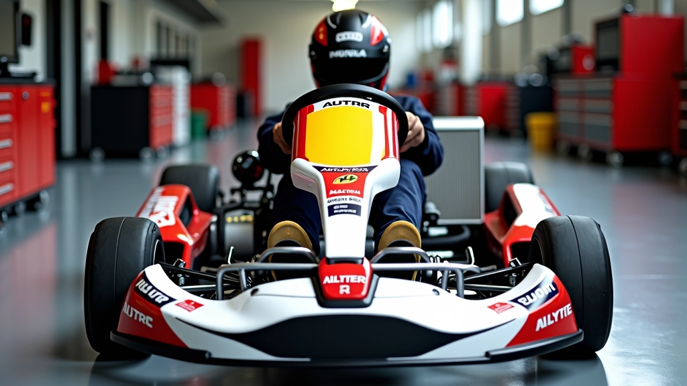
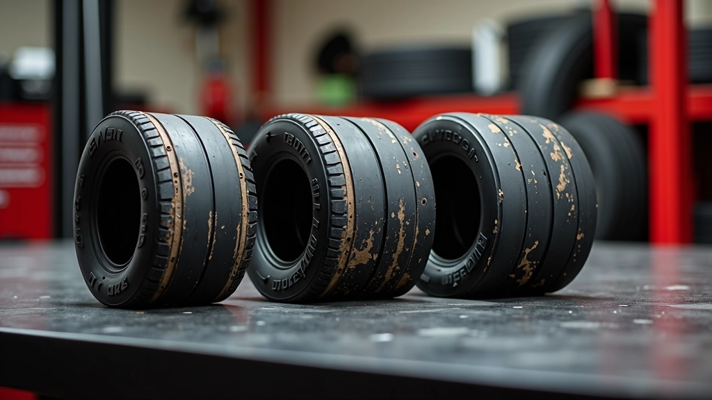
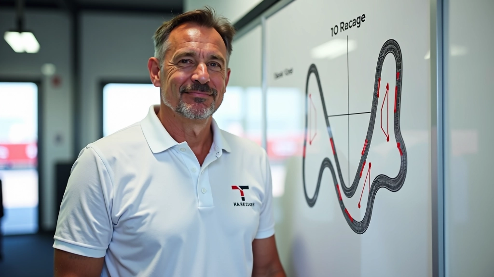

كيفية إيجاد نقطة الأبكس الصحيحة في المنحنيات
الأبكس ليس مجرد نقطة عشوائية. شرح عملي لكيفية اختيار الخط الأمثل الذي يسمح لك بالدخول والخروج بكفاءة.
الخط الأمثل يعتمد على إعدادات سيارتك. اكتشف كيف يؤثر توازن وضبط الإطارات على أدائك الكلي.


فريق التحرير والمراجعة
يُعدّ هذا المحتوى من قِبل فريق أبكس رايد التحريري، المتخصص في تقديم إرشادات عملية وسهلة الفهم حول تحسين أداء السباق.
هناك فرق كبير بين سائق يركب سيارة مضبوطة بشكل صحيح وآخر يركب سيارة بإعدادات عشوائية. السيارة المضبوطة تعطيك ثقة أكثر في المنحنيات. الإطارات المناسبة تمنحك قبضة أفضل. التوازن الصحيح يسمح لك بالتسارع بقوة دون أن تفقد السيطرة. نحن نتحدث هنا عن تفاصيل صغيرة لكنها تحدث فرقاً ضخماً في السباق.
الخط الأمثل ليس مجرد مهارة قيادة — إنه نتيجة مباشرة لإعدادات السيارة. تعديل بسيط في ضغط الإطارات يمكنه تغيير كيفية تفاعل السيارة مع المنحنى. هذا ما يجب أن تفهمه قبل أن تخطو في حلبة السباق.

ضغط الإطارات ليس خياراً — إنه أساس كل شيء. ضغط منخفض جداً يعني إطارات ناعمة جداً، وهذا يقلل من قبضتك في المنحنيات. ضغط مرتفع جداً يجعل الإطارات صلبة جداً، وتفقد المرونة التي تحتاجها للقيادة السلسة.
الضغط المثالي يختلف حسب حجم الكارت والحلبة. لكن بشكل عام، نحن نتحدث عن ضغط بين 1.2 و 1.5 بار للإطارات الأمامية و 1.3 إلى 1.6 بار للخلفية. تغيير صغير بمقدار 0.1 بار يمكنه تغيير كيفية تفاعل السيارة مع المنحنيات الحادة.
نصيحة عملية: اختبر ضغطاً مختلفاً في جلسات التدريب. ستشعر الفرق فوراً في كيفية دخول السيارة للمنحنى.


التوازن هو ما يحدد كيفية تصرف السيارة في المنحنى. توازن أمامي قوي جداً يعني أن السيارة تدخل المنحنى بثقة لكنك قد تواجه صعوبة في الخروج. توازن خلفي قوي يعطيك تسارعاً أقوى عند الخروج لكن قد تشعر بعدم الاستقرار عند الدخول.
معظم السائقين يبدأون بتوازن وسط (حوالي 50-50 بين الأمام والخلف) ثم يعدلونه حسب أسلوبهم. بعض السائقين يفضلون توازناً أمامياً قليلاً أقوى لأنهم يثقون أكثر بالدخول الحاد. آخرون يفضلون خلفياً أقوى لأنهم يحبون التسارع المباشر.
الإطارات القديمة والمستهلكة تقدم قبضة أسوأ بكثير من الإطارات الجديدة. هذا حقيقة بسيطة لكن الكثيرين لا ينتبهون لها. إطار جديد يعطيك ثقة أكثر وتحكماً أفضل في المنحنيات. لا تتوقع أن تحقق الخط الأمثل بإطارات متهالكة.
درجة حرارة الإطار أيضاً مهمة جداً. إطار بارد جداً لا يعطيك القبضة الكاملة. إطار ساخن جداً يفقد الاستقرار. هناك نطاق مثالي حول 60-80 درجة مئوية حيث تعمل الإطارات بكفاءة عالية. تحرك على الحلبة لتسخين الإطارات قبل أن تبدأ بالسباق الفعلي.


الأبكس ليس مجرد نقطة عشوائية. شرح عملي لكيفية اختيار الخط الأمثل الذي يسمح لك بالدخول والخروج بكفاءة.

الكثير يكبحون في الوقت الخاطئ. هنا ستتعلم متى وأين تبدأ الكبح لتحقيق أفضل نتيجة في كل منحنى.

الخروج من المنحنى بشكل صحيح هو ما يفرق بين الفائز والخاسر. تعلم كيفية تطبيق التسارع في الوقت المناسب.
إعدادات السيارة ليست شيئاً ثانوياً — إنها الأساس الذي يبني عليه الخط الأمثل. ضغط الإطارات، التوازن، جودة الإطارات، ودرجة الحرارة كلها عوامل تؤثر مباشرة على كيفية دخولك وخروجك من المنحنيات.
ابدأ بإعدادات أساسية معقولة، ثم عدّل واحداً أو اثنين من العوامل في كل جلسة. لا تحاول تغيير كل شيء دفعة واحدة — ستشعر بالارتباك وتفقد فهمك للعلاقة بين الإعدادات والأداء. الطريق إلى الخط الأمثل يمر عبر التجريب المنظم والفهم العميق لسيارتك.
تذكّر: أفضل سائقين في العالم لا يقضون وقتهم فقط في القيادة — يقضون وقتاً كبيراً في ضبط وفهم إعدادات سيارتهم. هذا ما يجعلهم متفوقين.
هذا المحتوى مقدم لأغراض تعليمية وإعلامية فقط. المعلومات والنصائح الواردة هنا مستندة على ممارسات عامة وخبرات شائعة في عالم الكارتينج. قد تختلف الإعدادات المثالية حسب نوع الكارت والحلبة والظروف المناخية والسائق نفسه. نحن ننصح بشدة بالتشاور مع مدرب محترف أو فني كارتينج ذي خبرة قبل إجراء تغييرات كبيرة على إعدادات سيارتك. استخدم هذه المعلومات على مسؤوليتك الخاصة.